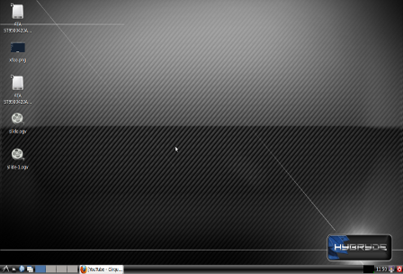

LXDE "Lightweight X11 Desktop Environment" is a lightweight desktop environment based on the Openbox window manager. It is designed specifically for older computers or lightweight configurations such as netbooks or small computers, since it can operate with only 128 MB of RAM "idle". on Debian.
